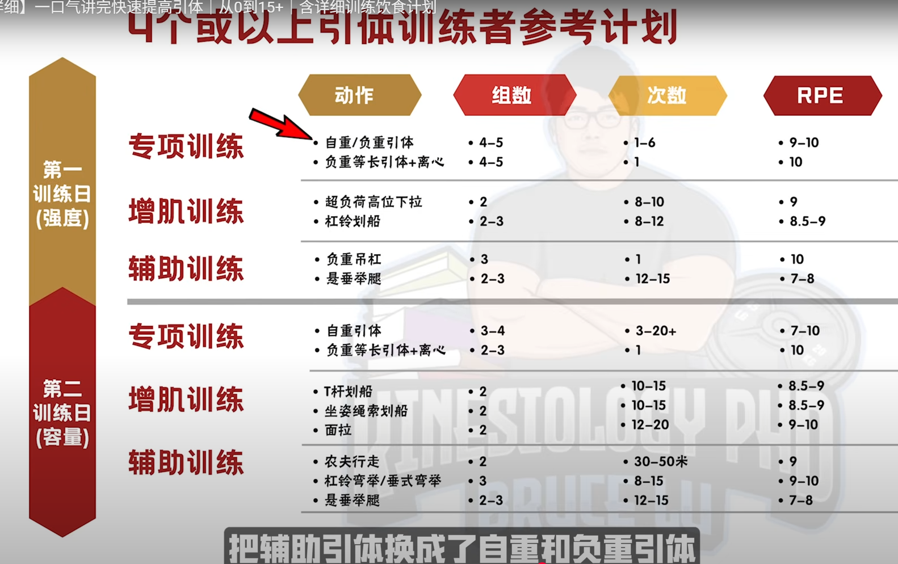
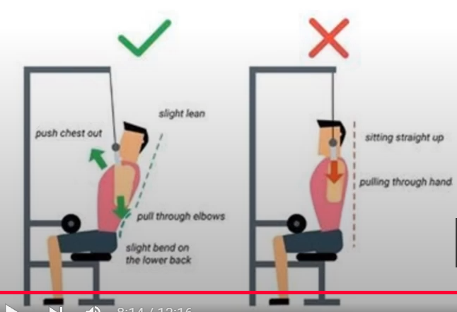
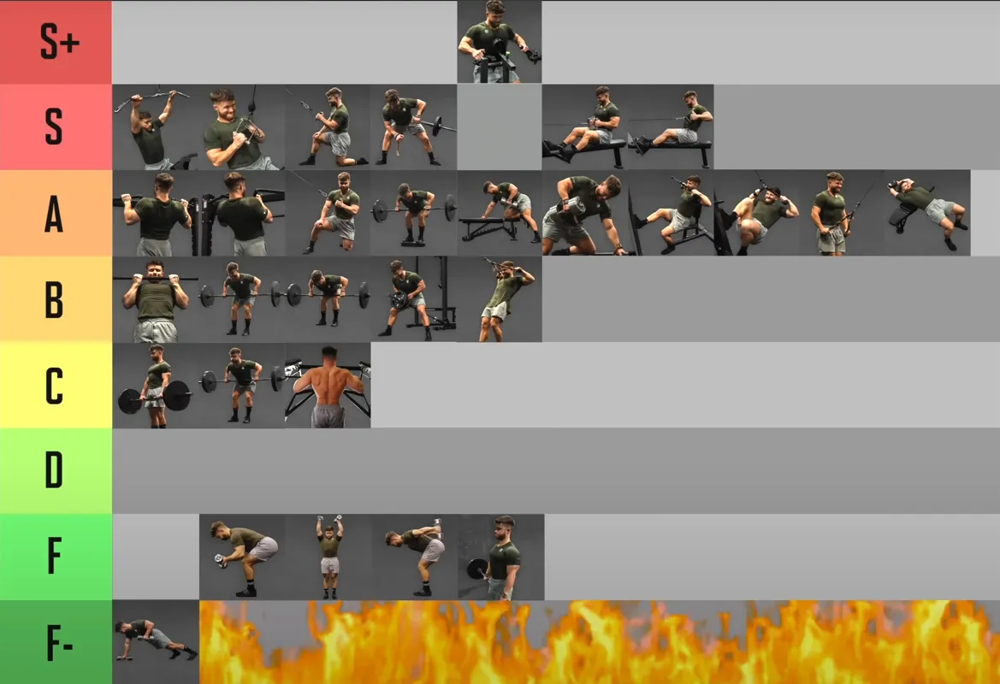

Back
pull 肌肉负责控制，不是爆发力
- push 是远离身体，所以很安全，需要爆发力
- pull 拉向身体，会撞到自己，所以需要的不是爆发力，是控制力
- 主要肌肉是背部（背部很复杂）和肱二头肌
- 采用健美训练方法，多次数
【全网最详细】一口气讲完快速提高引体｜从0到15+

背部肌肉种类
- 背阔肌: 引体向上、高位下拉、划船（杠铃划船、哑铃划船）。
- 竖脊肌: 硬拉、山羊挺身、超人（superman）练习。
- 斜方肌: 分上、中、下三部分。
- 菱形肌
划船优先夹肩胛骨，而不是拉到最后才夹。
pull 不一样
(Rowing, Deadlift, Chin-Up) （划船、硬拉、引体向上）
These are the only exercises where you don’t push close to your limit. Do more sets to get the work done. See it more as “strength practice” than all-out lifting. But to make these effective at increasing strength and size, control the eccentric by lowering slowly for about 2-3 seconds. Try to accelerate as much as possible on the concentric, lifting phase. 这些是唯一不需要你逼近极限的练习。多做几组就能达到效果。与其说是全力以赴的举重，不如把它看作是“力量练习”。但为了有效地增加力量和肌肉块头，需要控制离心收缩，缓慢降低身体约2-3秒。在向心收缩和举重阶段，尽量加速。
背部
- chest support row，Dumbbell Elbows Out Chest Supported Row 上面两个一个是有专门的，另一个用可调节凳子么？
- t杠下拉（似乎是45度倾斜）
- 插拔式水平划船
Get A Huge Back With Only 3 Exercises
eugene teo
0-3 RIR： 0-3 RIR 是指 Reps in Reserve，也就是保留次数。它是一种衡量训练强度的常用方法，表示你在完成一组动作后，距离力竭（即无法再用标准姿势完成一次动作）还有多少次的余力。
- warm up with pull Downs(下拉)
- A1 pull-ups 4sets of 8-15 reps 60s rest 0-3 RIR, ——下降时要控制，很慢很慢，本质上就是慢速离心收缩，刺激肌肉，不是顶峰pause。
- B1 Lat prayer 4sets of 8-15 reps，60s rest, weight 47 0-3 RIR——很像斜前方拉下来的机器，李茶也也很推荐
- C1 smith machine deficit flexion row 4sets of 10-15 reps 90s rest, 0-3 RIR
白天手術房晚上健身房
肱二头肌
- 如果时间不够，就不练
- 哑铃锤式弯举
背阔肌
作者有两个版本，重制版更加分析了下拉
背阔肌唯一：引体向上，完美符合背阔肌功能
如果拉不起来：就单手滑轮下拉，或者水平。
~~哑铃杠铃划船统统拿掉~~——技术难
双手下拉1.5倍肩宽

Thib
| 类别 | Primary | Secondary | Auxiliary | Remedial |
|---|---|---|---|---|
| 上背部、三角肌后束 | 反手引体向上及其变化动作，正手引体向上及其变化动作，胸部支撑划船，俯身杠铃划船，T杠划船 | 单臂哑铃划船，T杠下拉及其变化动作，钢索坐姿划船及其变化动作，墙角划船，胖子引体向上（反式划船），坐姿对颈绳子握柄划船 | 直臂下拉，钢索仰卧直臂上拉，高位滑轮交叉划船，低位滑轮交叉划船，机器坐姿划船，机器背阔肌下拉，俯身侧平举，机器反飞鸟，胸部支撑上斜俯身侧平举 | 胸部支撑上斜哑铃耸肩，坐姿钢索耸肩（肩胛骨缩回），上斜俯卧平举 |
盖伊三人组：一个动作
背部：一致推荐 引体向上
Athlean-X
back
best：weighted pull up， bb row(担心下背部，用chest support 替代),
almost best：Meadows Row, 1 arm high cable row，lat pulldown，dead row
Trap
best： Trap Bar Shrugs
almost best： Face Pulls w/ Overhead Extension, ~~Wrap Around Rows~~, DB/BB Shrugs, Cable Angled Shrugs
The Best Damn Back and Biceps Workout 最佳背部和二头肌锻炼
Based on the results of this experiment, I bet the following would be one kick-ass workout that’d target the lats, mid, and lower traps as well as the biceps. Enjoy! 根据这次实验的结果，我敢打赌，下面的训练计划一定会非常有效，不仅能锻炼到二头肌，还能锻炼到背阔肌、斜方肌中部、下部和中部。好好享受吧！
- Weighted Pull Up, Weighted Chin Up, or Weighted Parallel Grip Pull Up 负重引体向上、负重引体向上或负重平行握力引体向上
- Dumbbell Bent Over Row or Weighted Feet Elevated Inverted Row 哑铃俯身划船或负重双脚抬高倒立划船
- Dumbbell Elbows Out Chest Supported Row or Prone Trap Raise 哑铃肘外展胸部支撑划船或俯卧斜方肌平举
- Deadlift or Rack Pull 硬拉或架上拉
- Barbell Curl or EZ-Bar Curl 杠铃弯举或 EZ-Bar 弯举
The Best And Worst Back Exercises (Ranked By Science)

S: Wide-Grip lat Pulldown, Neutral-Grip lat Pulldown, Meadows Row， chest support row（健身房有），cable row
A：wide-grip pull-up, 1 arm row